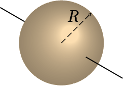

Para conseguir dar uma curva com uma bicicleta ou uma moto, é necessário que exista suficiente atrito entre os pneus e a estrada, porque a força de atrito deverá ser igual à massa vezes a aceleração centrípeta. Como a força de atrito atua na superfície dos pneus, se o condutor não se inclinasse, a lei da inércia implicava que a sua tendência fosse continuar numa trajetória retilínea, contrariando a trajetória circular da superfície dos pneus produzindo desequilíbrio. Nas corridas de motos, as velocidades elevadas implicam ângulos de inclinação maiores; para conseguir inclinar mais a moto, o condutor vira inicialmente o volante no sentido oposto ao sentido em que vai tomar a curva e sai para o lado em que a moto se inclina para contrariar a tendencia da moto cair para o lado oposto.
Os vetores introduzidos no capítulo 2 são vetores livres, que são considerados iguais se tiverem o mesmo módulo, direção e sentido, independentemente do ponto do espaço onde se encontrem. No caso das forças, não basta saber o módulo, direção e sentido. Por exemplo, quando se aplica uma força numa porta para fechá-la, para além do módulo, direção e sentido da força, será também importante o ponto em que essa força for aplicada. Quanto mais longe das dobradiças for aplicada a força, mais fácil será fechar a porta; a força necessária para fechar a porta será muito elevada se for aplicada num ponto muito próximo de uma das dobradiças.
Imagine que para movermos uma cadeira para outro sítio, levantamo-la com uma mão. Se o peso da cadeira for 40 N, e o seu centro de gravidade for o ponto C indicado na figura 5.1, poderíamos apoiar a nossa mão num ponto P no espaldar da cadeira e aplicar uma força vertical ligeiramente superior a 40 N para levantá-la. Enquanto a cadeira começa a subir, rodará até ficar na posição de equilíbrio, como no lado direito da figura 5.1, em que o peso e a força aplicada pela mão encontram-se na mesma reta vertical. Se pudéssemos aplicar a força para cima num ponto da cadeira que estivesse na mesma vertical em que o ponto C estava inicialmente, a cadeira começaria a subir sem rodar.
Podemos concluir que para prever o efeito que produzirá uma força, será necessário saber o seu módulo, direção, sentido e também a sua linha de ação, que é a linha reta na mesma direção da força, que passa pelo ponto onde a força é aplicada. Uma força produz efeitos diferentes se for aplicada em linhas de ação diferentes, embora o seu módulo, direção e sentido continuem iguais.

Figura 5.2: Três pontos
equivalentes.
Este tipo de vetores, caraterizados por uma linha de ação específica, chamam-se vetores deslizantes. O ponto exato onde forem aplicadas não é importante, sempre que esse ponto esteja na sua linha de ação. No exemplo da cadeira a ser levantada, a mesma força para cima podia ter sido aplicada nos pontos Q ou R na figura 5.2, que estão na mesma linha vertical com o ponto P, e o efeito teria sido o mesmo. A cadeira rodaria na mesma direção e com a mesma aceleração angular. Como tal, é equivalente admitir que é aplicada em P, Q, R, ou qualquer outro ponto na sua linha de ação. Contudo, a pesar do efeito inicial ser o mesmo, uma vez a cadeira começa a rodar, os pontos P, Q e R deixam de estar na mesma linha vertical. A vertical que passa por Q ficará mais próxima do centro de gravidade do que a vertical que passa por R. Como tal, a cadeira oscilará mais antes de ficar em equilíbrio, quando a força for aplicada em R, do que quando é aplicada em Q.
Sempre que foi necessário somar forças no capítulo 4, admitimos que podiam ser deslocadas livremente e somadas como vetores livres, usando a regra do paralelogramo. Nas próximas seções mostra-se que essa soma de forças como se fossem vetores livres não está errada, sempre e quando seja adicionado também o efeito de rotação introduzido quando se desloca uma força para uma linha de ação diferente. A aceleração no movimento de translação de um corpo rígido é devida à força resultante que pode ser obtida somando as forças externas como vetores livres. A aceleração angular no movimento de rotação é devida a que as linhas de ação das forças externas não passam pelo centro de massa.
Para determinar como somar forças e, em geral, vetores deslizantes, consideremos primeiro o caso mais simples, quando as forças a serem somadas estão na mesma linha de ação. Por exemplo, se pretendermos levantar um livro que está em repouso sobre uma mesa horizontal, como na figura 5.3, para aplicar uma força oposta ao peso, e na mesma linha de ação, podíamos fazer um furo vertical no livro, passando pelo centro de gravidade, e passar uma corda pelo furo, segurando-a na base com uma anilha.

Quando puxarmos a corda para cima, com uma força , essa força será colinear com o peso, isto é, as duas forças têm a mesma linha de ação, o que permite que sejam deslocadas para um ponto comum nessa linha de ação e somadas como vetores livres. Se for maior que , o livro subirá na vertical, com movimento uniformemente acelerado e sem rotação; após ter ganho alguma velocidade, reduzimos o módulo da força , fazendo com que fique igual a , para que o livro continue a subir com velocidade constante. Quando o livro estiver próximo da altura à qual o queremos subir, reduzimos o módulo da força novamente, de forma que a aceleração vertical seja negativa, até o livro parar; uma vez para, voltamos a aumentar ligeramente a força, ficando igual a , para que o livro permaneça em repouso pendurado da corda. Estamos tão habituados a seguir esse procedimento, que nem damos conta dele. Mas se fossemos programar um braço robótico para repetir o processo, teríamos de seguir todos esses passos.
Para não termos de furar o livro, para o levantar sem que rode, podíamos passar uma folha de papel por debaixo, como no lado esquerdo da figura 5.4, e puxar nos dois lados da folha de papel, de forma que o livro permaneça horizontal enquanto sobe. Estaremos então a aplicar duas forças e , representadas na parte central da figura 5.4
Essas duas forças chamam-se concorrentes, porque as suas linhas de ação são diferentes mas cruzam-se um ponto comum P. Podemos então deslocar cada uma das forças na sua linha de ação até o ponto comum P, e somá-las nesse ponto como vetores livres, produzindo a força resultante no lado direito da figura 5.4. Observe-se que, se o livro é levantado mantendo sempre a sua orientação horizontal, não roda e a força resultante será colinear com o peso . Ou seja, na figura 5.4 o ponto P e o centro de gravidade, C, do livro deverão estar na mesma linha vertical; os módulos e as direções de e deverão ter as relações necessárias para que isso aconteça.
Quando as linhas de ação de duas forças e são paralelas, como é o caso no lado esquerdo da figura 5.5, podemos usar o seguinte procedimento para obter a sua resultante : começa-se por deslocar as forças, nas suas linhas de ação, até ficarem em pontos que estejam na mesma linha perpendicular a essas linhas. A seguir, aplicam-se duas forças e , nos dois pontos onde estão a ser aplicadas e , como mostra a parte central da figura 5.5; a introdução dessas duas forças não altera o sistema de forças, porque as duas forcas e são colineares e a sua resultante é nula. As forças e , aplicadas no mesmo ponto somam-se produzindo a força no mesmo ponto; de forma análoga, e somam-se produzindo a força . As duas forças e são concorrentes, e a sua resultante obtém-se pelo procedimento usado para forças concorrentes (lado direito da figura 5.5).

Observe-se que a força resultante, , tem a mesma direção e sentido das duas forças e e o seu módulo é igual à soma dos módulos de e , já que, a soma dos vetores livres e no ponto P, é igual à soma de e , como se fossem vetores livres:
Se e tivessem sentidos opostos, a resultante será então no sentido da força que tiver maior módulo e o módulo da resultante seria o módulo da maior menos o módulo da menor.

Figura 5.6: Linha de ação da resultante.
A linha de ação da resultante será outra reta paralela, mas diferente, às linhas de ação de e . Para determinar as distâncias e , desde a linha de ação da resultante até às linhas de ação das forças e , observa-se (figura 5.6) que a distância entre o ponto comum de e , P, e o ponto Q, onde a linha de ação da resultante cruza a reta que passa pelos pontos de aplicação de e , é igual a:
onde e são os ângulos entre as forças e e a perpendicular às suas linhas de ação. Como é a soma de duas forças perpendiculares, e , e é também a soma de duas forças perpendiculares, e , as tangentes dos dois ângulos são:
e, substituindo essas expressões na equação 5.2, obtém-se um resultado chamado lei das alavancas:
Resumindo, para levantar o livro por meio de duas forças verticais, sem que o livro rode, será necessário que a relação entre os módulos dessas duas forças, , seja o inverso da relação entre as distâncias das suas linhas de ação até o centro de gravidade, .
A regra das alavancas pode ser explicada introduzindo o conceito de momento de uma força, em relação a um ponto. Define-se o momento de uma força , em relação a um ponto O, igual ao produto do módulo da força vezes a distância que há entre o ponto O e a linha de ação da força:
A distância chama-se braço da força, em relação ao ponto O e o momento também costuma chamar-se torque.
Figura 5.7: Momento de uma força.
Se for o vetor posição, desde o ponto O até o ponto P onde a força é aplicada, o braço da força em relação a O será igual a , em que o ângulo é o ângulo entre os vetores e (figura 5.7). Conclui- -se que o momento da força em relação ao ponto O é igual a,
O momento mede o efeito de rotação produzido pela força, se no ponto O houvesse um eixo fixo, perpendicular ao plano formado por e , podendo o corpo rodar à volta desse eixo (se o ponto O estiver fora do corpo, pode imaginar-se uma barra rígida ligada ao corpo, que se estende até O). Quanto mais afastada estiver a linha de ação da força do ponto O, maior será o momento da força. Isso explica porquê é mais fácil fechar a porta quanto mais longe das dobradiças for aplicada a força. Se o ponto O estiver na linha de ação da força, será 0, os vetores e não definirão nenhum plano, e o momento da força será nulo.
Na figura 5.7, observe-se que é a componente da força na direção perpendicular ao vetor posição , ou seja, o momento da força é também igual ao produto da distância desde a origem até o ponto onde atua, , vezes a componente da força perpendicular à reta que passa por O e pelo ponto onde a força é aplicada.
A equação 5.6 mostra que o momento da força é igual ao módulo do produto vetorial entre o vetor posição e a força. Como tal, é conveniente definir o vetor momento da força , em relação ao ponto O,
O momento é uma tendência a rodar em torno de um eixo na direção do vector , ou seja, num plano de rotação perpendicular a e no sentido da regra da mão direita: se o eixo dos for escolhido na direção e sentido de , a rotação será no sentido do semieixo positivo dos para o semieixo positivo dos . Na figura 5.7 o momento é um vetor que aponta para fora da imagem e foi representado por um arco circular com uma seta a apontar no sentido da rotação.

Figura 5.8: Binário.
O método descrito para somar forças paralelas falhará no caso em que as duas forças formam um binário, que são duas forças paralelas com o mesmo módulo mas em sentidos opostos, como na figura 5.8. Nesse caso, as forças e não serão concorrentes e não podem ser deslocadas para um ponto comum. No entanto, a equação 5.1 indica que a resultante será nula. O binário não produz nenhuma translação em nenhum sentido, mas apenas rotação. O momento total, em relação à origem O, é a soma dos momentos das duas forças,
Os dois vetores posição dos pontos Q e P dependem de onde estiver a origem O, mas a sua diferença é a posição relativa na figura, que não depende do ponto onde estiver a origem.
Isso quer dizer que o binário produz um momento que não depende de nenhum ponto de referência,
Na figura 5.8 o vetor momento do binário aponta para fora da figura, e foi representado por um arco circular com uma seta, no sentido anti-horário.
Uma força aplicada num ponto P pode ser deslocada para outro ponto Q, fora da sua linha de ação, usando o procedimento ilustrado na figura 5.9. Adicionam-se duas forças e nos pontos P e Q, que acrescentam um momento que chamaremos (no sentido dos ponteiros do relógio na figura); para não alterar nada, adiciona-se também um binário (no sentido contrário aos ponteiros do relógio) que anula o binário . No ponto P ficam duas forças iguais e opostas que se anulam; o sistema resultante é então a mesma força inicial , mas aplicada no ponto Q, e o binário :
que é igual ao momento que a força original, em P, produz em relação ao ponto Q para onde foi deslocada.

Conclui-se então que a resultante de um conjunto de forças será a soma delas como vetores livres e pode colocar-se em qualquer ponto Q, sempre e quando seja acrescentado também um binário que é igual à soma dos momentos de todas as forças em relação a Q.
Quando as direções de todas as forças estiverem num mesmo plano, será conveniente definir dois dos eixos coordenados nesse plano, por exemplo e , e a origem no ponto onde vão ser somadas as forças. Como tal, o momento de cada força em relação à origem tem unicamente componente segundo , igual ao determinante:
em que e são as coordenadas do ponto onde atua a força . Se houver forças externas, todas no plano , a força e binário resultantes na origem O são:
O binário resultante pode ser eliminado, deslocando a força resultante para um ponto a uma distância da linha que passa pela origem, paralela a .
Quando as linhas de ação das forças não estão num mesmo plano, o binário resultante terá também uma componente paralela à força resultante . A componente de perpendicular a pode ser eliminada, deslocando a força, ficando força e momento resultantes paralelos.
Se a força resultante de todas as forças externas atuando num corpo rígido for nula, e se o momento resultante dessas forças, , for também nulo em relação a um ponto, então será também nulo em qualquer outro ponto, já que o deslocamento da força resultante (nula) não introduz nenhum binário. Nesse caso, as forças externas não produzem nenhum efeito de aceleração linear nem angular e o corpo rígido encontra-se em equilíbrio: ou em repouso, ou com velocidade (linear e/ou angular) constante.
Como tal, as condições de equilíbrio de um corpo rígido é que a soma das forças externas, como vetores livres, seja nula e que a soma dos momentos de todas as forças externas, em relação a qualquer ponto, seja nula.
O automóvel na figura, com peso de 9000 N, encontra-se em repouso numa estrada horizontal. O centro de gravidade, C, do automóvel encontra-se 60 cm detrás do eixo das rodas da frente e 120 cm à frente do eixo das rodas de atrás. Determine a força de reação normal em cada pneu.

Resolução. O automóvel encontra-se em equilíbrio. A figura à direita mostra o diagrama de corpo livre. é a soma das reações normais nos dois pneus da frente e é a soma das reações normais nos pneus de atrás (admitindo que os lados esquerdo e direito sejam simétricos, essas forças estarão aplicadas ao meio de cada um dos eixos). Se houver forças de atrito nos pneus, o único que podemos concluir é que a soma delas deverá ser nula; o calculo dessas forças implica conhecer melhor a estrutura do carro e a sua deformação devida ao seu peso; admitiremos que o carro é perfeitamente rígido, sem sofrer deformações e, como tal, não há forças de atrito.
A condição de equilíbrio para que a força resultante seja nula é:
Para encontrar o valor dessas duas forças há que considerar também a condição de que a soma dos momentos, das 3 forças externas, é nula, em relação a qualquer ponto. A soma dos momentos em relação ao ponto A é:
A seguir podia substituir-se esse valor na condição para a soma das forças verticais, mas também é possível usar a condição de que a soma dos momentos em relação a B é nula:
Admitindo que o centro de gravidade está a igual distância dos pneus direitos e esquerdos, cada uma das reações normais nos pneus da frente será 3000 N e a reação normal em cada pneu de atrás será 1500 N.
Se o automóvel tivesse movimento uniforme, estaria ainda em equilíbrio, mas existiria também a força de resistência do ar, que aponta para a direita e para baixo. A componente horizontal dessa força do ar seria contrariada por forças de atrito entre os pneus e a estrada, com resultante para a esquerda, e a componente vertical seria contrariada por um aumento das reações normais nos pneus. Mas como a resistência do ar e as forças de atrito teriam linhas de ação diferentes, o resultado seria um binário que faz rodar o automóvel no sentido dos ponteiros do relógio; o aumento da reação normal seria maior nos pneus de atrás do que nos da frente. Para poder calcular esse binário seria necessário conhecer o coeficiente aerodinâmico do automóvel, a velocidade do vento e o ponto de aplicação da resistência do ar, que é uma força distribuída em toda a superfície do automóvel.
Um corpo rígido é uma distribução contínua de massa num volume. Se a massa total do corpo for , e for a massa infinitesimal que existe em cada ponto do corpo,
em que o integral é de volume, dentro do volume ocupado pelo sólido, já que é o produto da massa volúmica pelo volume infinitesimal .
Define-se o vetor posição do centro de massa, , igual à média, pesada pela massa, do vetor posição no sólido:
Encontre a posição do centro de massa do sólido homogéneo representado na figura.

Resolução. O volume do sólido é delimitado pelos 5 planos , , , e .
A área infinitesimal é igual à massa volúmica vezes o volume infinitesimal em coordenas cartesianas, . Começa-se por calcular a massa total a partir da equação 5.13:
Como o corpo é homogéneo, é constante. No Maxima, os três integrais devem ser calculados de forma sequencial; p representará a massa volúmica
Embora os resultados intermédios não tenham sido apresentados, estão armazenados nas variáveis %o1 e %o2.
Para calcular , repete-se o mesmo integral de volume, mudando o integrando de , para
Conclui-se que o vector posição do centro de massa é: .
Em todo corpo rígido existe sempre um único ponto que é o centro de massa. Se a origem for escolhida exatamente no centro de massa, o integral na equação 5.14 será nulo para cada uma das três componentes:
Os integrais em 5.15 serão todos nulo unicamente se a origem estiver no centro de massa. Este resultado será muito importante mais para a frente.
Derivando os dois lados da equação 5.15 obtém-se a expressão da o velocidade do centro de massa:
Isto é, a velocidade do centro de massa é a média das velocidades de todos as partes do corpo, com pesos iguais às massas das partes.
E derivando a equação 5.16, em ordem ao tempo, obtém-se a aceleração do centro de massa,
que é a média, pesada pela massa, das acelerações de todas as partes do corpo.
Se o referencial em que é medida a aceleração de cada ponto for um referencial inercial, o produto será igual à força resultante que atua sobre a massa :
Observe-se que sempre que exista aceleração, deverá existir uma força infinitesimal aplicada em cada ponto do sólido, para conseguir acompanhar o movimento do corpo, permanecendo rígido. Na maioria dos pontos essa força é devida unicamente às forças internas de contacto entre as partes do corpo, forças essas que são desencadeadas em todo o corpo pela ação de forças externas , , …, que atuam em pontos do corpo rígido. Nos pontos 1, 2, …, , a força inclui as forças de contacto mais a força externa em cada ponto. A diferencial é a variação da força em todos os pontos do volume do corpo.
Substituindo a expressão 5.18 na equação 5.17, conclui-se que,
Na soma das forças em todos os pontos do corpo, por cada força interna de contacto que existir num ponto, existirá outra força igual mas de sentido oposto em outro ponto vizinho, devido à lei de ação e reação. Assim sendo, no integral todas as forças internas de contacto serão eliminadas, ficando unicamente a soma das forças externas, , , …, , que é igual à força resultante sobre o corpo rígido. Como tal, a equação 5.19 é equivalente a,
Este resultado importante é a lei do movimento de translação do corpo rígido:
O movimento do centro de massa de qualquer corpo rígido com massa é igual ao movimento que teria uma partícula pontual com massa sob a ação de uma força igual à força resultante sobre o corpo rígido.
Lembre-se que a soma das forças é feita como se fossem vetores livres. Se a força resultante for nula, o centro de massa estará ou em repouso ou em estado de movimento retilíneo uniforme, mas outros pontos no corpo rígido poderão ter movimentos mais complicados.
O peso é um exemplo de força externa aplicada em todos os pontos do corpo rígido. A equação 5.19 nesse caso dá,
Se a aceleração da gravidade for igual em todos os pontos do corpo, o integral no lado esquerdo será igual a e conclui-se que a aceleração do centro de massa é igual à aceleração da gravidade e que o centro de gravidade —ponto de aplicação da força resultante do peso de todas as partes do corpo— coincide com o centro de massa. Existem casos em que não é constante em todo o corpo, mas geralmente isso não acontece, sendo possível assumir que o peso total do objeto é a força aplicada no centro de massa.
Considere-se, por exemplo, uma lâmina triangular. Pendurando-a por um dos vértices, começará a oscilar até parar numa posição em que o centro de gravidade esteja no mesmo segmento de reta vertical que passa pelo vértice; traçando esse segmento no triângulo e repetindo o procedimento para os outros dois vértices, o ponto onde se cruzam os três segmentos será o centro de gravidade e centro de massa. Se a massa volúmica do triângulo for igual em todos os pontos, cada um dos segmentos verticais será a mediana que divide o triângulo em duas partes com a mesma área e, consequentemente, com o mesmo peso. Nos sólidos com formas simétricas e massa volúmica constante, o centro de massa encontra-se no centro geométrico. A figura 5.10 mostra outros três exemplos.
Num corpo rígido com movimento de translação sem rotação, a cada instante a aceleração de todos os pontos é a mesma, igual à aceleração do centro de massa, que é igual à soma das forças externas dividida pela massa do corpo. Como o corpo não roda, a soma dos momentos de todas as forças em relação ao centro de massa deverá ser nula. Há que ter atenção ao facto de que a soma dos momentos é nula unicamente em relação ao centro de massa; em relação a outro ponto P, a soma dos momentos será igual e oposta ao momento da força resultante, que atua no centro de massa, em relação a P.
O mesmo automóvel do exemplo 5.1, acelera durante 20 s, com aceleração tangencial constante, desde o repouso até à velocidade de 60 km/h. Sabendo que o centro de gravidade está 57 cm por cima do chão, determine as forças de reação normal em cada pneu, no instante em que começa o seu movimento.
Resolução. No momento em que o automóvel começa a andar, a resistência do ar é nula, porque a velocidade também é nula. Como tal, as únicas forças horizontais que podem ser responsáveis pela aceleração são as forças de atrito estático, , entre os pneus e a estrada. A figura seguinte mostra o diagrama de corpo livre.
é a soma das duas reações normais nos dois pneus da frente e a soma das reações normais dos pneus de atrás. A aceleração tangencial do automóvel é no sentido horizontal e igual a:
A lei do movimento para a translação conduz às equações:
Como o automóvel não roda, a soma dos momentos das forças externas, em relação ao centro de massa (que é o mesmo centro de gravidade) deverá ser igual a zero. O peso não produz momento em relação ao centro de massa. Os momentos das forças e , em relação ao centro de massa, são no sentido dos ponteiros do relógio. O momento da força é no sentido oposto aos ponteiros do relógio. A soma dos momentos em relação ao centro de massa é:
A resolução do sistema das 3 equações conduz a,
A força de atrito nos quatro pneus é 765 N, a reação em cada pneu da frente é 2879 N e em cada pneu de atrás 1621 N. Observe-se que no diagrama de corpo livre é equivalente colocar a força de atrito nos pneus da frente ou nos pneus de atrás, mas como é uma força de tração, será produzida pelos pneus onde o automóvel tiver tração.
A dinâmica do corpo rígido consiste no estudo dos efeitos das forças e binários externos na variação dos seus seis graus de liberdade. A trajetória de um ponto qualquer no corpo, usado como referência, dá informação sobre a variação de três desses graus de liberdade. A descrição da variação da direção do eixo de rotação dá informação sobre outros 2 graus de liberdade e a rotação em torno desse eixo fornece a informação sobre o sexto grau de liberdade. No pião da figura 5.11 indicam-se dois ângulos, e , que definem a direção do eixo do pião; um terceiro ângulo, , determina a rotação do pião em relação ao seu eixo. Nesse caso, dois dos ângulos, e , variam em função do tempo e, portanto, há duas velocidades angulares, e .

O pião está a rodar à volta do seu eixo, no sentido indicado para o ângulo , com velocidade angular . Como tal, tem velocidade angular na direção do seu eixo e desde a ponta para a parte superior. Como o eixo do pião não está em posição vertical, o seu peso e a reação normal na ponta produzem binário no sentido em que o ângulo aumenta. Esse binário implica uma aceleração angular tangente à circunferência na figura, e com o sentido indicado para o ângulo , que faz com que o vetor velocidade angular, no eixo do pião rode com velocidade angular , no sentido indicado na circunferência.
O movimento geral dum corpo rígido é mais fácil de estudar usando dinâmica lagrangiana, em vez da mecânica vetorial usada neste capítulo. Concluiremos este capítulo analisando o caso da rotação plana, em que a direção do eixo de rotação permanece fixo, de forma que só há um ângulo ( ) que varia em função do tempo.
Quando o eixo de rotação de um corpo rígido permanece fixo em relação a um sistema inercial, a segunda lei de Newton será válida para as acelerações medidas no referencial do corpo rígido. Assim sendo, a equação 3.35 permite calcular a força que atua na massa diferencial em cada ponto
Cada uma dessas forças produz um momento em relação à origem, mas como o corpo rígido pode rodar unicamente em torno do eixo fixo , interessa unicamente calcular a componente , obtida usando unicamente a projeção de no plano de rotação:
Integrando no volume do corpo rígido obtém-se a componente do binário resultante,
A aceleração angular foi colocada fora do integral, por ser igual em todos os pontos do corpo rígido. O integral no lado direito,
é o momento de inércia, do corpo rígido, em relação ao eixo dos .
No integral todos os momentos das forças internas de contacto serão eliminados, em consequência da lei de ação e reação, ficando unicamente a soma dos momentos produzidos pelas forças externas, , , …, . Assim sendo, a equação 5.24 conduz à lei da rotação com eixo de rotação fixo:
Num corpo rígido que pode rodar em torno de um eixo fixo, a componente ao longo desse eixo, do momento resultante em relação a um ponto qualquer no eixo, é igual ao produto do seu momento de inércia em relação ao eixo, vezes a sua aceleração angular.
Determine o momento de inércia de um cilindro homogéneo, com raio e altura , em relação ao seu eixo de simetria.
Resolução. Como o eixo de rotação é o mesmo eixo do cilindro, o volume do cilindro define-se em coordenadas cilíndricas através das condições , , .
O elemento diferencial de volume em coordenadas cilíndricas é ( ) e, como tal, , em que é a massa volúmica. O momento de inércia é,
Observe-se que a massa do cilindro é obtida pelo integral,
Assim sendo, a expressão para o momento de inércia é:
No movimento de rotação, o momento de inércia joga um papel semelhante à massa no movimento de translação. Observe-se a semelhança da equação 5.26 com a segunda lei de Newton.
A tabela 5.1 mostra as expressões do momento de inércia de alguns sólidos em relação aos eixos que passam pelo seu centro de massa. O momento de inércia é sempre diretamente proporcional à massa do corpo e a expressão que multiplica a massa tem unidades de distância ao quadrado. Define-se o raio de giração em relação a um eixo de rotação, igual à raiz quadrada do momento de inércia dividido pela massa:
| Esfera | Cilindro | Paralelepípedo |
|---|---|---|
|  |

|

|
| Eixo 1: | ||
| Eixo 2: |
O momento de inércia em relação a um eixo que passa pelo centro de massa permite calcular o momento de inércia em relação a qualquer outro eixo paralelo, que não passe pelo centro de massa, usando-se o teorema dos eixos paralelos:
onde é a massa do corpo e a distância entre os dois eixos paralelos. Também é possível calcular o momento de inércia de um sólido somando os momentos de inércia de várias partes que o constituem, já que o integral 5.25 pode ser escrito como a soma dos integrais nas várias partes.
O momento de uma barra suficientemente fina, de comprimento , pode obter-se usando a tabela 5.1, a partir da expressão para um cilindro, no limite , ou a partir da expressão para o paralelepípedo, com e .
Uma roldana fixa é um exemplo de corpo rígido com eixo de rotação fixo. Se a roldana for homogénea, o centro de massa também estará no eixo de rotação. A figura 5.12 mostra uma roldana de massa e raio , em que o fio acompanha a rotação da roldana, sem deslizar. As forças e momentos externos são o peso, , as tensões na corda nos dois lados da roldana, e , a força de contacto no eixo da roldana, e o binário que é produzido pelo atrito no eixo da roldana, no sentido oposto à rotação da roldana.
O peso da roldana e a força de contacto não produzem momento em relação ao eixo. Como a roldana é um cilindro, usando a expressão para o momento de inércia na tabela 5.1, a equação para o binário resultante é,
Quando o atrito no eixo pode ser ignorado,
em que é a aceleração tangencial de um ponto na corda. Observe-se que, independentemente do raio da roldana, quando a massa da roldana for muito menor que e , pode admitir-se que a tensão é igual nos dois lados da corda.
(Para conferir a sua resposta, clique nela.)


 Um armário de 45 kg, montado sobre rodas que o deixam andar livremente
sobre o chão, é acelerado por uma força externa de 310 N.
Um armário de 45 kg, montado sobre rodas que o deixam andar livremente
sobre o chão, é acelerado por uma força externa de 310 N.
 A escada na figura está apoiada numa superfície horizontal (ponto A) e
numa parede vertical (ponto B). Entre a escada e a superfície
horizontal o coeficiente de atrito estático é
,
enquanto que o atrito da escada com a parede vertical é
desprezável. Admitindo que o centro de gravidade da escada se encontra
a metade do seu comprimento, calcule o valor mínimo de
, para garantir que a escada permaneça em repouso.
A escada na figura está apoiada numa superfície horizontal (ponto A) e
numa parede vertical (ponto B). Entre a escada e a superfície
horizontal o coeficiente de atrito estático é
,
enquanto que o atrito da escada com a parede vertical é
desprezável. Admitindo que o centro de gravidade da escada se encontra
a metade do seu comprimento, calcule o valor mínimo de
, para garantir que a escada permaneça em repouso.


 Encontre a expressão do momento de inércia de um cilindro de massa
e raio
, com um orifício cilíndrico, coaxial, de raio
(menor que
), em torno do eixo do cilindro. Sugestão:
Determine a massa que teria o cilindro completo, sem orifício, em
função de
, e a massa do cilindro que é removido quando se faz o
orifício; o momento de inércia é igual ao momento de inércia do
cilindro completo (consulte a tabela 5.1), mais o momento de
inércia do cilindro que foi removido, admitindo que a massa deste
último seja negativa!
Encontre a expressão do momento de inércia de um cilindro de massa
e raio
, com um orifício cilíndrico, coaxial, de raio
(menor que
), em torno do eixo do cilindro. Sugestão:
Determine a massa que teria o cilindro completo, sem orifício, em
função de
, e a massa do cilindro que é removido quando se faz o
orifício; o momento de inércia é igual ao momento de inércia do
cilindro completo (consulte a tabela 5.1), mais o momento de
inércia do cilindro que foi removido, admitindo que a massa deste
último seja negativa!

Perguntas: 1. E. 2. C. 3. B. 4. D. 5. C.
Problemas

Se for aplicada em qualquer ponto por cima da reta que passa pela origem, na direção da linha de ação da força , , o momento será no sentido contrário aos ponteiros do relógio.
(clique para continuar)
Se for aplicada em qualquer ponto por cima da reta que passa pela origem, na direção da linha de ação da força , , o momento será no sentido contrário aos ponteiros do relógio.
(clique para continuar)
Se for aplicada em qualquer ponto por cima da reta que passa pela origem, na direção da linha de ação da força , , o momento será no sentido contrário aos ponteiros do relógio.
(clique para continuar)
Este é o único ponto na lista que está por baixo da reta que passa pela origem, na direção da linha de ação da força , , produzindo assim momento no sentido dos ponteiros do relógio.
(clique para continuar)
Para que o sistema esteja em equilíbrio, a resultante dos pesos das duas crianças deve ficar aplicada no eixo. Como tal, as distâncias até o eixo e os dois pesos deverão verificar a lei das alavancas.
(clique para continuar)
Para que o sistema esteja em equilíbrio, a resultante dos pesos das duas crianças deve ficar aplicada no eixo. Como tal, as distâncias até o eixo e os dois pesos deverão verificar a lei das alavancas.
(clique para continuar)
Para que o sistema esteja em equilíbrio, a resultante dos pesos das duas crianças deve ficar aplicada no eixo. Como tal, as distâncias até o eixo e os dois pesos deverão verificar a lei das alavancas.
(clique para continuar)
Para que o sistema esteja em equilíbrio, a resultante dos pesos das duas crianças deve ficar aplicada no eixo. Como tal, as distâncias até o eixo e os dois pesos deverão verificar a lei das alavancas.
(clique para continuar)
Para que o sistema esteja em equilíbrio, a resultante dos pesos das duas crianças deve ficar aplicada no eixo. Como tal, as distâncias até o eixo e os dois pesos deverão verificar a lei das alavancas.
(clique para continuar)
A resultante dos pesos das duas partes ( e ), aplicadas nos seus centros de gravidade (às distâncias e do centro de gravidade do objeto), deverá ficar aplicada no centro de gravidade do objeto: . Se o objeto não é simétrico, poderá ser diferente de .
(clique para continuar)
A resultante dos pesos das duas partes ( e ), aplicadas nos seus centros de gravidade (às distâncias e do centro de gravidade do objeto), deverá ficar aplicada no centro de gravidade do objeto: . Se o objeto não é simétrico, poderá ser diferente de .
(clique para continuar)
(clique para continuar)
A resultante dos pesos das duas partes ( e ), aplicadas nos seus centros de gravidade (às distâncias e do centro de gravidade do objeto), deverá ficar aplicada no centro de gravidade do objeto: . Essa condição pode ser válida, sem necessidade de que as duas áreas sejam iguais.
(clique para continuar)
A resultante dos pesos das duas partes ( e ), aplicadas nos seus centros de gravidade (às distâncias e do centro de gravidade do objeto), deverá ficar aplicada no centro de gravidade do objeto: . Essa condição pode ser válida, sem necessidade de que os dois volumes sejam iguais.
(clique para continuar)
As duas forças produzem momentos no mesmo sentido e não em sentidos opostos.
(clique para continuar)
As duas forças produzem momentos no mesmo sentido e não em sentidos opostos, e unicamente a componente horizontal da força de 60 N produz momento em relação a O; a componente vertical não produz momento.
(clique para continuar)
A componente da força de 60 N que produz momento em relação a O é a componente horizontal, igual a .
(clique para continuar)
(clique para continuar)
Unicamente a componente horizontal da força de 60 N produz momento em relação a O; a componente vertical não produz momento.
(clique para continuar)
No limite a peça é um cilindro, que não pode ter momento de inércia nulo, como implica esta expressão.
(clique para continuar)
As unidades do momento de inércia são massa por distância ao quadrado, mas esta expressão tem unidades de massa por distância à quarta.
(clique para continuar)
(clique para continuar)
Esta seria o momento de inércia de dois cilindros com raios e e com a mesma massa (momento de inércia total igual à soma dos momentos de inércias dos dois cilindros). Mas se cada cilindro tivesse massa , a massa da peça seria e não .
(clique para continuar)
As unidades do momento de inércia são massa por distância ao quadrado, mas esta expressão tem unidades de massa por distância.
(clique para continuar)
Se for aplicada em qualquer ponto por cima da reta que passa pela origem, na direção da linha de ação da força , , o momento será no sentido contrário aos ponteiros do relógio.
(clique para continuar)